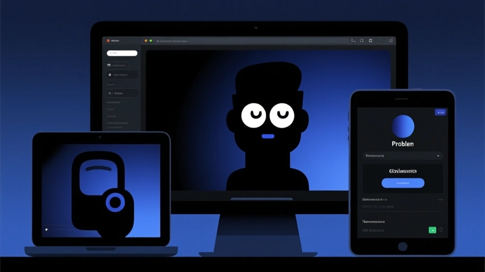

In the noisy inbox, timing is a competitive moat. This article distills practical scheduling tactics, edge cases, and their measurable impact, so you can ship mail that lands without waking the spam filters.
1) Schedule with intent — not intuition
Subject lines grab attention; timing keeps it. The modern playbook leans on data rather than a gut feeling. Start by defining your key segments and baseline send times: B2B early-morning (8-9am local), B2C late afternoon (3-5pm), and post-purchase follow-ups at 24–72 hours. Track opens within the first 1 hour after sending; use a 60-minute window as your granularity floor for optimization experiments.
2) A simple cadence that scales
Create a cadence that feels human but scales at volume. Use a 3-touch welcome or re-engagement flow, with a primary send at a predictable window (e.g., Tuesday 10am), a follow-up at 24 hours, and a final nudge at 72 hours. Thresholds: keep total touches per recipient under 6 per week; under 12 per month for most verticals.

3) Don’t worship open rates alone
Open rate is a noisy proxy for engagement in 2026. Apple’s MPP, Gmail image loading quirks, and privacy changes distort the metric. Instead track click rate, conversions, and revenue per message. Use a composite KPI: 1) open rate (short-term proxy), 2) click-to-open (CPO) to gauge relevance, 3) revenue per email (RPE) to quantify impact.
4) After-action reviews for sender reputation
Every send should conclude with a quick post-mortem. Did you hit your window? Were you within your cadence? Did you cause a spike in unsubscribes? Use these learnings to tweak send times, segments, and creative, not to chase a single metric.
When experimenting with send times, run parallel cohorts across at least 2 time windows and keep a control group. The minimal detectable effect (MDE) depends on your volume, but a good starting point is a 5% lift with 100k impressions per cohort.
Two-column snapshot
Random send times, inconsistent engagement, and unreliable learnings from one-off campaigns.
Cadence-backed sends, parallel time-window experiments, and a measurable lift in engagement across cohorts.
5) The nudge: actionable stages
- Define your segments with clear local times across geographies
- Lock a primary send window per segment
- Run 2–3 controlled experiments each quarter
- Measure success with RPE and CPO together
- Document learnings in a shared playbook
The Bottom Line
Smart scheduling is about disciplined experimentation, clear thresholds, and measurable impact. Start with a data-driven cadence, run controlled tests, and trade vanity metrics for revenue-focused KPIs.